Android11.0_User’s Manual_V1.2
Document classification: □ Top secret □ Secret □ Internal information ■ Open
Copyright
The copyright of this manual belongs to Baoding Folinx Embedded Technology Co., Ltd. Without the written permission of our company, no organizations or individuals have the right to copy, distribute, or reproduce any part of this manual in any form, and violators will be held legally responsible.
Forlinx adheres to copyrights of all graphics and texts used in all publications in original or license-free forms.
The drivers and utilities used for the components are subject to the copyrights of the respective manufacturers. The license conditions of the respective manufacturer are to be adhered to. Related license expenses for the operating system and applications should be calculated/declared separately by the related party or its representatives.
Application Scope
This software manual is applicable to the OKMX8MPQ-C platform Android11.0 operating system of Forlinx.
Revision History
Date |
Version |
Revision History |
|---|---|---|
11/02/2022 |
V1.0 |
OKMX8MPQ-C-Android11.0 User’s Manual Initial Version. |
16/08/2022 |
V1.1 |
1. Adjusting the structure of the manual to standardize the format; |
10/04/2023 |
V1.2 |
1. Adding camera ov5645 and DAA3840 support; |
Overview
This manual is designed to help you quickly familiarize yourselves with the product, and understand the interface functions and testing methods. It primarily covers the testing of interface functions on the development board, the methods for flashing images, and troubleshooting procedures for common issues encountered in use. During the testing process, some commands are annotated for easy understanding, focusing on practicality and sufficiency. Please refer to “OKMX8MPQ-C _ Android 11.0 _ Compilation Manual _ V1.0-2022.08.16” provided by Forlinx for kernel compilation, related application compilation methods, development environment construction, etc.
There are total four chapters:
Chapter 1. provides an overview of the product, briefly introducing the interface resources of the development board, the relevant driver paths in the kernel source code, supported flashing and booting methods, as well as explanations of key sections in the documentation;
Chapter 2. describes fast power-on startup with serial login;
Chapter 3. provides an introduction to the product’s functions, including the Qt interface functions and tests;
Chapter 4. mainly describes the method of updating the image to the storage device, and users can choose the corresponding burning method according to their actual situation.
A description of some of the symbols and formats associated with this manual:
Format |
Meaning |
|---|---|
Blue font on gray background |
Refers to commands entered at the command line (Manual input required). |
Black font on gray background |
Serial port output message after entering a command |
Bold black on gray background |
Key information in the serial port output message |
// |
Interpretation of input instructions or output information |
Username@Hostname |
root@OK8MP: Account information for serial port login and network login of the development board. |
Example: After plugging in the USB flash disk, view the mount directory through the ls command
root@OK8MP:~# ls /run/media //List files in the/run/media directory
mmcblk2p1 sda1
root@okmx8mm: The user name is root and the host name is OK-MX8MPX-C, indicating that the root user is used for operations on the development board;
//：Explanation of the instruction, no input required;
lls /run/media: Blue text on a gray background indicates relevant commands that need to be manually input;
mmcblk2p1 **sda1 ：**The black font with gray background is the output information after the command is input, and the bold font is the key information, which indicates the mounting directory of the TF card.
1. OKMX8MPQ-C Development Board Description
OKMX8MPQ-C development board is developed with NXP I. MX 8m Plus high-performance processors, with built-in NPU and ISP, and AI computing capability up to 2.3 TOPS, which can meet the needs of lightweight edge computing. At the same time flexible I/O interface configuration and advanced rich multimedia resources to facilitate customer application development. The development board supports 2 x Ethernet, 2 x CAN-FD, 4 x UART, 4G, 5G, dual-band WiFi, PCIe 3.0, USB3.0, HDMI2.0, LVDS, MIPI _ CSI, MIPI _ DSI and other interface resources to maximize CPU resources. Industrial design, -40 ℃ ~ + 85 ℃ wide temperature operation, electrostatic, pulse group, electrical isolation, and other protective measures to ensure its wide application in various fields, to meet the needs of smart city, industrial Internet, intelligent medical, intelligent transportation, and other applications.
Development Board Interface Diagram：

Note:
This software manual will no longer describe the hardware parameters. Before referring to this manual for software development, please download and read the “OKMX8MPQ-C_Hardware Manual” located in the “Hardware Information/User Manual” path (download method is the same as software documentation). This will help you understand the product naming conventions and the hardware configuration information of the product you are using, which will assist you in using this product effectively.
1.1 Introduction to Linux 5.4.70 System Software Resources
Device |
Location of driver source code in the kernel |
Device Name |
|---|---|---|
LCD Backlight Driver |
drivers/video/backlight/pwm_bl.c |
/sys/class/backlight |
USB Port |
drivers/usb/storage/ |
|
USB Mouse |
drivers/hid/usbhid/ |
/dev/input/mice |
Ethernet |
drivers/net/ethernet/freescale/fec_main.c |
|
SD/micro TF card driver |
drivers/mmc/host/sdhci-esdhc-imx.c |
/dev/block/mmcblk0pX |
EMMC Driver |
drivers/mmc/host/sdhci-esdhc-imx.c |
/dev/block/mmcblk1pX |
OV5645 |
drivers/media/i2c/ov5645.c |
/dev/videoX |
LCD Controller |
drivers/gpu/imx/lcdif/lcdif-common.c |
|
MIPI CSI |
drivers/media/platform/mxc/capture/mxc_mipi_csi.c |
|
MIPI DSI |
drivers/gpu/drm/imx/sec_mipi_dsim-imx.c |
|
LCD Touch Driver |
drivers/input/touchscreen/edt-ft5x06.c |
/dev/input/eventX |
RTC Real Time Clock Driver |
drivers/rtc/rtc-rx8010.c |
/dev/rtc0 |
serial port |
drivers/tty/serial/imx.c |
/dev/ttySX |
Key Driver |
drivers/input/keyboard/gpio_keys.c |
/dev/input/eventX |
LED |
drivers/leds/leds-gpio.c |
|
SAI |
sound/soc/fsl/fsl_sai.c |
|
Audio Driver |
sound/soc/codecs/wm8960.c |
/dev/snd/ |
PMIC |
drivers/mfd/bd71837.c |
|
PCIE |
drivers/pci/controller/dwc/pcie-designware-plat.c |
|
QSPI |
drivers/mtd/spi-nor/spi-nor.c |
|
Watchdog |
drivers/watchdog/imx2_wdt.c |
|
SPI |
drivers/spi/spi-imx.c |
|
PWM |
drivers/pwm/pwm-imx.c |
1.2 eMMC Memory Partition Table
The following table shows the eMMC memory partition information for the Android operating system:
Partition Index |
Name |
Offset |
Size |
File system |
Content |
|---|---|---|---|---|---|
N/A |
Bootloader |
33 KB |
4MB |
N/A |
bootloader |
1 |
dtbo_a |
8MB |
4MB |
N/A |
dtbo.img |
2 |
dtbo_b |
Follow dtbo_a |
4MB |
N/A |
dtbo.img |
3 |
boot_a |
Follow dtbo_b |
64MB |
Boot.img (kernel+ramdisk) |
boot.img |
4 |
boot_b |
Follow boot_a |
64MB |
Boot.img (kernel+ramdisk) |
boot.img |
5 |
vendor_boot_a |
Follow boot_b |
64MB |
Part of recovery ramdisk |
vendor_boot.img |
6 |
vendor_boot_b |
Follow vendor_boot_a |
64MB |
Part of recovery ramdisk |
vendor_boot.img |
7 |
misc |
Follow vendor_boot_b |
4MB |
N/A |
To restore the saved bootloader information, keep the |
8 |
metadata |
Follow misc |
16M |
N/A |
Metadata of OTA update, |
9 |
presistdata |
Follow metadata |
1M |
N/A |
Option to operate unlock |
10 |
Super |
Follow presistdata |
3584M |
N/A |
system.img, system_ext. |
11 |
userdata |
Follow Super |
Remaining total |
N/A |
Application data storage |
12 |
fbmisc |
Follow userdata |
1M |
N/A |
To store the state |
13 |
Logo |
Follow fbmisc |
64M |
N/A |
Save the logo image for uboot display |
14 |
vbmeta_a |
Follow logo |
1M |
N/A |
Save verify boot’s metadata |
15 |
vbmeta_b |
Follow vbmeta_a |
1M |
N/A |
Save verify boot’s metadata |
1.3 Flashing and Boot Settings
The OKMX8MPQ - C supports OTG and TF card flashing, and it also supports eMMC and QSPI boot. As shown in the figure below, when the DIP switch is set, it enables eMMC boot.

DIP Switch |
No 1. |
No 2. |
No 3. |
No 4. |
|---|---|---|---|---|
FUSES |
OFF |
OFF |
OFF |
OFF |
OTG |
ON |
OFF |
OFF |
OFF |
eMMC |
OFF |
ON |
OFF |
OFF |
TF |
ON |
ON |
OFF |
OFF |
QSPI |
OFF |
ON |
ON |
OFF |
Note: The silk screen next to the DIP switch on the carrier board shows the DIP switch position in different states, and you can directly set the switch according to the silk screen.
2. Fast Startup
2.1 Preparation Before Startup
The OKMX8MPQ-C development board has two system login methods, serial and network login. Hardware preparation before system startup:
12V 3A DC power cable
USB A to two Type-C cables (OTG burning or debugging)
Network cable (for network login)
Check the start mode DIP switch
Please check the red DIP switch on your development board to confirm that the desired startup mode has been set. For the startup mode setting, please refer to Programming and Startup Settings.

2.2 Serial Login
Note:
Serial port settings: Baud rate 115200, 8 data bits, 1 stop bit, no parity bit, no flow control;
The serial terminal login uses the root user with no password;
Software: Windows PC requires Super Terminal; choose a familiar serial terminal software.
2.2.1 Serial Login
**Note: **
PC does not have USB to high-speed serial port driver, users need to download and install it;
http://www.wch.cn/downloads/CH343SER_EXE.html
You can also use our downloaded directly double-click to run, the path is as follows:
Path: User Profile\Original Profile\CH343SER.exe
Use USB A to Type-C to connect the DEBUG port of the development board to the PC, the DEBUG port is at the top right of the development board, P11:

In the following, we take the putty terminal software as an example to introduce the serial port login method:
Step1: First, it is necessary to confirm the serial port number of the computer to which it is connected. Check the serial port number from the “Device Manager”, and use the serial port number recognized by the computer as the correct one (SERIAL-A is the default debug serial port for Linux, SERIAL-B is the debug serial port for M7).

Step 2: Open and set up putty, then set the serial line according to the COM port of the computer used, baud rate 115200

After printing information, press Enter to enter the system.
evk_8mp:/ $
To view kernel version:
evk_8mp:/ $ cat /proc/version
Linux version 5.4.70 (lixinguo@844ae623a156) (Android (6573524 based on r383902b) clang version 11.0.2 (https://android.googlesource.com/toolchain/llvm-project b397f81060ce6d701042b782172ed13bee898b79), LLD 11.0.2 (/buildbot/tmp/tmpF3FjA8 b397f81060ce6d701042b782172ed13bee898b79)) #1 SMP PREEMPT Thu Feb 24 00:16:45 UTC 2022
Kernel version information can also be viewed with the uname command:
evk_8mp:/ $ uname -a
Linux localhost 5.4.70 #1 SMP PREEMPT Thu Feb 24 00:16:45 UTC 2022 aarch64
2.2.2 Common Serial Port Issues
Common problem troubleshooting points for logging in using the serial port are as follows:
Case 1: No information is printed after connecting to the serial port:
First, check whether the DIP switch is correct;
Re-open the serial port;
Change a serial port cable to test it;
If none of the above steps work, check the status of the LED lights on the SoM. If they are constantly on, it suggests that the system is not starting properly and may require re-flashing the system. For detailed instructions on flashing the system, refer to “Chapter 5. Flashing the System”.
Case 2: Unable to input commands after connecting to the serial port.
Re-open the serial port;
Connect the USB serial cable to a different USB port on your computer. Check the corresponding COM port in the device manager and reopen the serial port;
Replace a serial port cable.
2.2.3 Screen Selection
OKMX8MPQ-C board supports mipi, LVDS and HDMI. The mipi interface is configured with a 7-inch display screen with a resolution of 1024x600 by default; the LVDS interface is configured with a 10.1-inch display screen with a channel 0 and a resolution of 1280x800;
The HDMI interface is connected to the HDMI display to adapt the resolution according to the read edid information.
From the uboot menu, choose to turn off or turn on one of the interfaces. Start the development board, press the space bar immediately after “Autoboot in 1 seconds” is displayed to enter the uboot menu, type 3 to select the display settings, and type 1-3 to change the on/off status of mipi, LVDS, and HDMI. After setting, type 0 to return to the previous menu, and then type 0 again to restart the development board. After restarting, display according to the setting results.
U-Boot 2020.04 (Apr 08 2023 - 03:24:44 +0000)
CPU: i.MX8MP[8] rev1.1 1600 MHz (running at 1200 MHz)
CPU: Industrial temperature grade (-40C to 105C) at 32C
Reset cause: POR
Model: Forlinx OK8MPlus LPDDR4 EVK board
DRAM: 4 GiB
mipi_panel enable
lvds0_panel enable
eth0 enable
eth1 enable
MMC: FSL_SDHC: 1, FSL_SDHC: 2
Loading Environment from MMC... *** Warning - bad CRC, using default environment
[*]-Video Link 0 (1024 x 600)
[0] lcd-controller@32e80000, video
[1] mipi_dsi@32e60000, video_bridge
[2] mipi_panel, panel
[*]-Video Link 1 (1280 x 800)
[0] lcd-controller@32e90000, video
[1] ldb@32ec005c, video_bridge
[2] lvds0_panel, panel
[ ]-Video Link 2
[0] lcd-controller@32e90000, video
[1] ldb@32ec005c, video_bridge
In: serial
Out: serial
Err: serial
BuildInfo:
- ATF
- U-Boot 2020.04
secure check passed
flash target is MMC:2
Net: config yt8521
eth0: ethernet@30be0000
Fastboot: Normal
Normal Boot
Autoboot in 1 seconds
-------------------------------------
1: shell
2: android lcd_density
3: Display select
0: reboot uboot
-------------------------------------
-------------------------------------
1: mipi is on
2: lvds is on
3: hdmi is on
0: return
-------------------------------------
Saving Environment to MMC... Writing to MMC(2)... OK
-------------------------------------
1: mipi is off
2: lvds is on
3: hdmi is on
0: return
-------------------------------------
Note: When two or three screens are turned on at the same time, all the open screens will display the Android desktop, and the second or third screen will be scaled according to the proportion of the first screen, resulting in poor display effect. The Android system will select the main screen in the order of mipi, LVDS and HDMI. For example, if you want to use the LVDS display screen as the main screen, you need to turn off the mipi display. At this time, the LVDS is used as the main screen, and the display will not be distorted during the test.
3. Android Function Use and Test
3.1 Main Interface Display
3.2 Application
Swipe up on the main screen to bring up the following screen.

3.3 Language Settings
Click “ ”, on the application interface to enter the setting interface:
”, on the application interface to enter the setting interface:
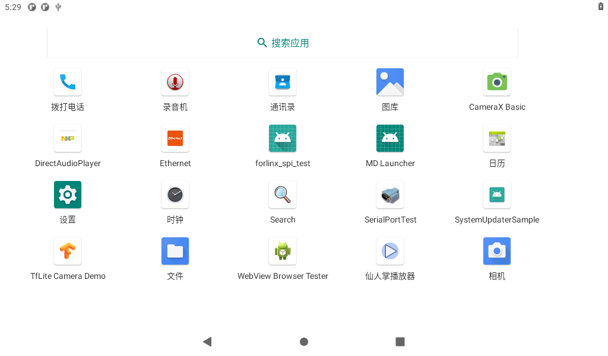
Click “” to enter the language setting interface:

Click “Language and input method” to enter the language setting interface:

Click “Add Language” to add a new language and set the default language.
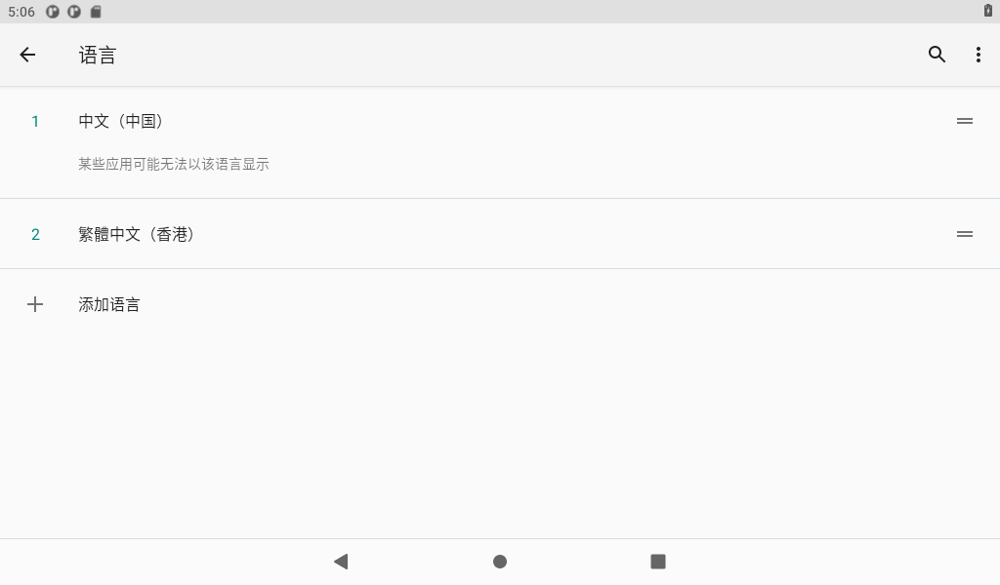
Note: When setting the default language, press and hold the four dash buttons on the right and drag up and down. If you use the mouse, press and hold the right mouse button to drag.
3.4 Picture and Audio View
Save the pictures and video files you need to view to a USB flash drive and insert the USB flash drive into the development board.

Click to view the U disk files, and you can see all the files in the U disk.

Click on the image file:
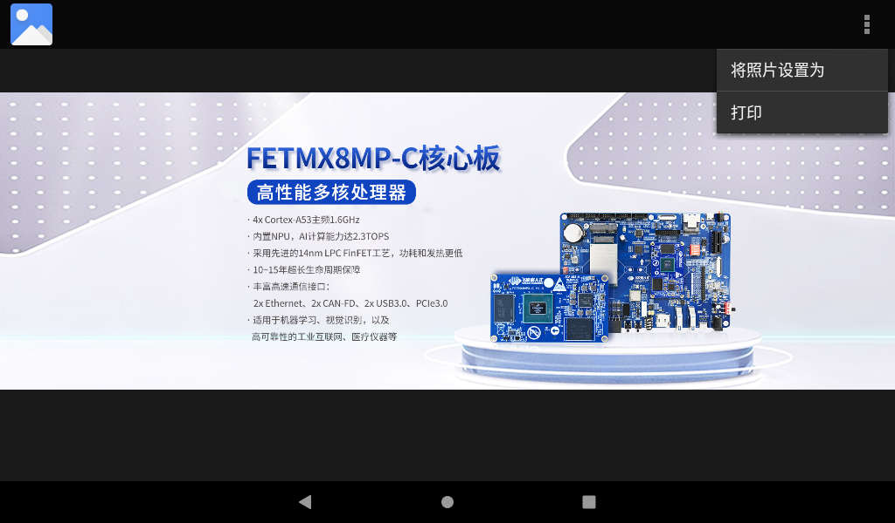
The touchscreen supports multi-touch, allowing you to use your fingers to perform zooming in and out.
Return to the USB drive interface and click on the video file.

The first time to play, you need to select the player, select always or only once, and then start playing the video. It is recommended to use the cactus player, which supports hardware decoding.

Please click on “Allow” to authorize the media player to access the device’s multimedia files.
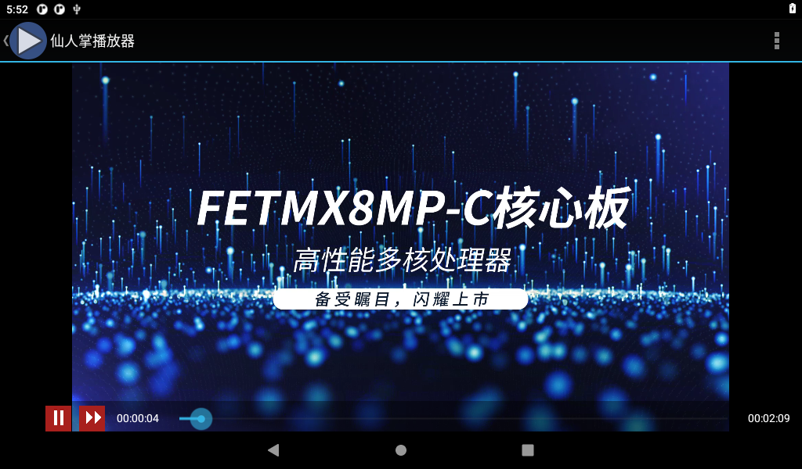
3.5 Music Play
Please save the audio files you need to play onto a USB flash drive, and then insert the USB flash drive into the development board.

Click the audio file to be played.
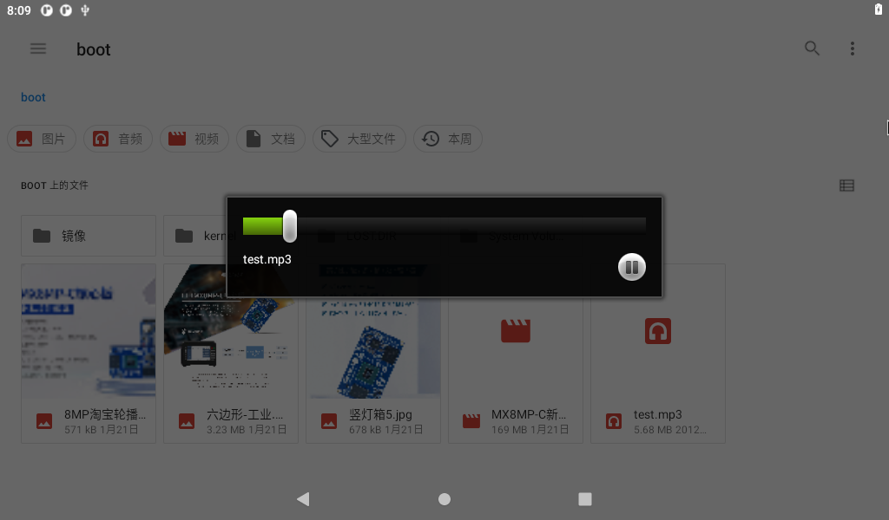
Click the music name to play automatically.
At this time, you can adjust the volume by pressing K2 on the carrier board of the development board.
3.6 Recording (Supporting Mic Input)
Select the desktop “ ” Recorder application to enter the recording, and ask for permission when you use it for the first time:
” Recorder application to enter the recording, and ask for permission when you use it for the first time:

Click “Yes”:
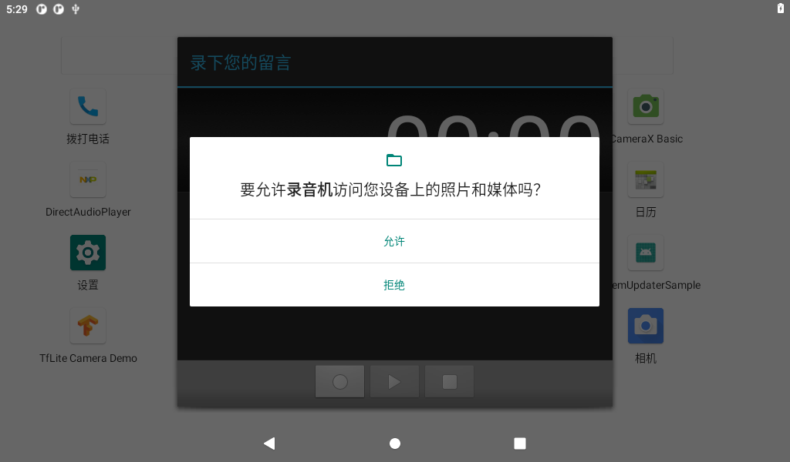
Click the circle button to start recording:


Click on the square button to stop recording, click on the triangle button to play, and finally, click the Done button to save. Saved files are stored in the File Manager internal storage.


3.7 Adjusting the Volume
Click “ ”, on the application interface to enter the setting interface:
”, on the application interface to enter the setting interface:

Click “Sound” in the settings interface to enter the volume settings interface.
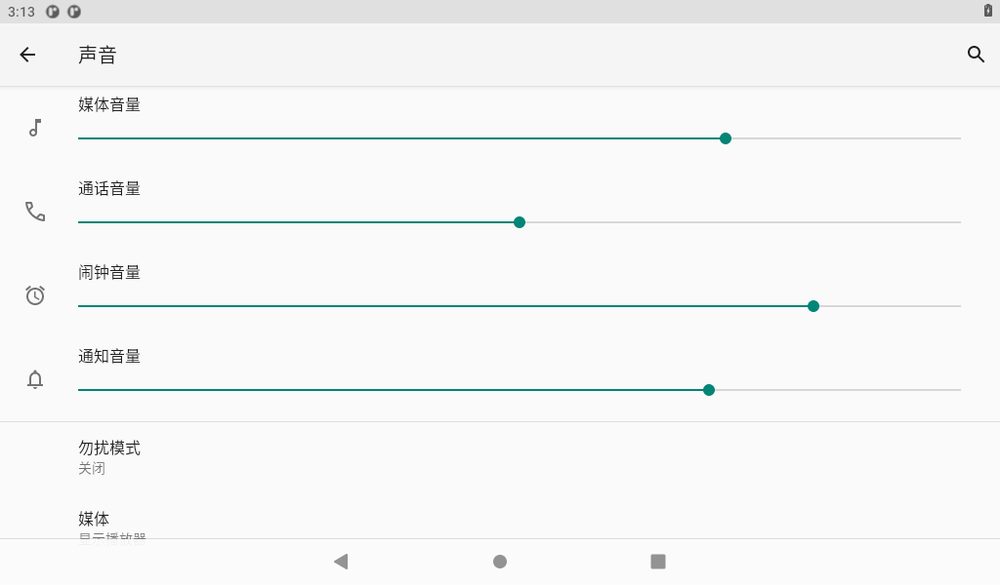
In this interface, the volume of each part can be adjusted, and the media volume can be adjusted by using the physical key K2 on the carrier board.
3.8 Backlight Control
Click “ ”, on the application interface to enter the setting interface:
”, on the application interface to enter the setting interface:

Click “Display” in the setting interface, enter the display setting interface, and select “Brightness” for the backlight setting, then the brightness adjustment slider will appear, adjust the brightness. Because the development board provided by Forlinx has no light perception, the automatic brightness adjustment here does not work.
The OKMX8MPQ is factory default set to never hibernate. If you need to wake up from hibernation, click on the hibernate option and select the hibernation time.


Drag the slider to set the backlight, and click the sleep button to select the screen sleep time.
3.9 Time Settings（RTC）
Click “ ”, on the application interface to enter the setting interface:
”, on the application interface to enter the setting interface:

Select “System,” where you can change the date and time, and even after power failure, the time can still be synchronized (ensure that the button battery is installed on the board).

To disable “Automatic Date and Time,” please follow these steps:
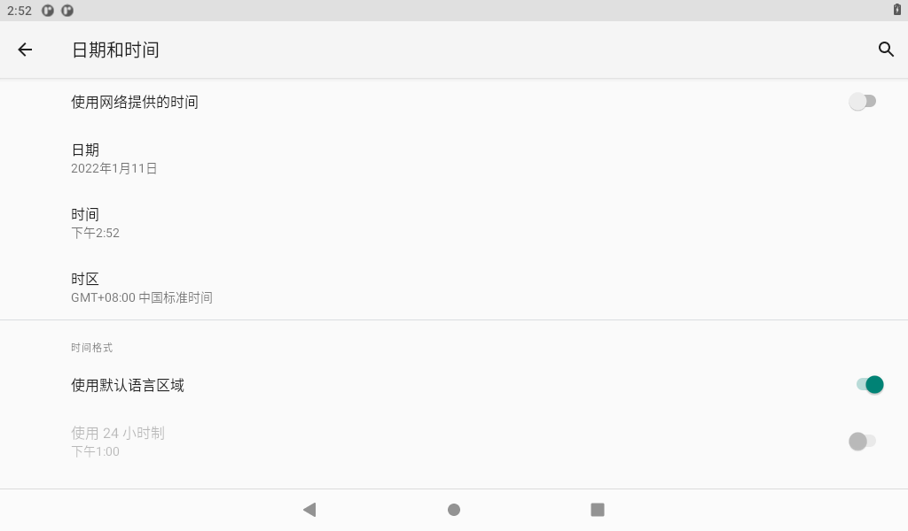
Click on “Set Date.”

Click on “Set Time.”

After clicking “Set Date” and “Set Time”, you can power off and power on the board, and then enter the time setting interface again, you will see that the time has been synchronized and updated.
3.10 Ethernet Test
Prepare a router, a network cable, and a network interface that can be connected to an external network;
After inserting the network cable, select “
 ”, as shown in the following figure:
”, as shown in the following figure:
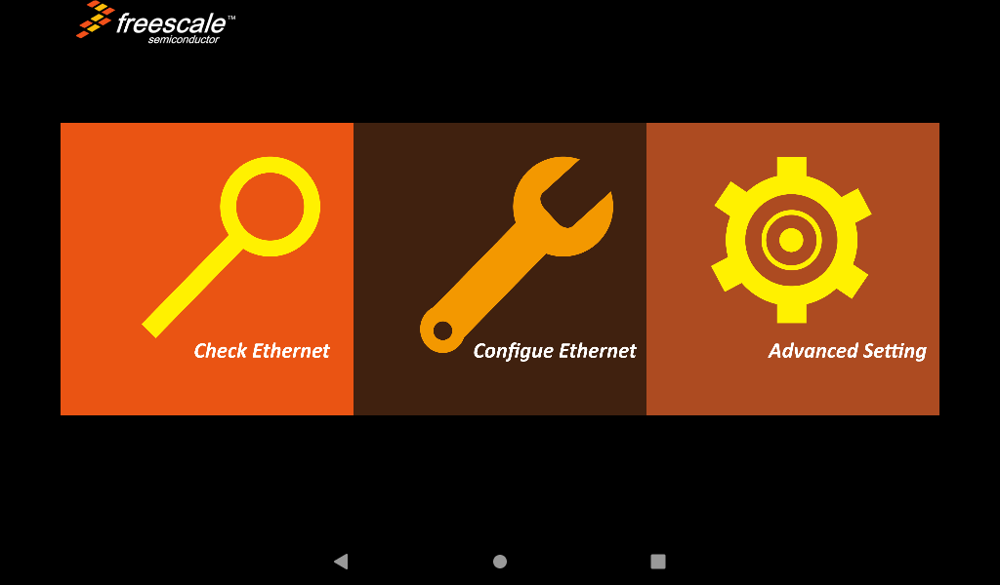
Click “Configure Ethernet”:
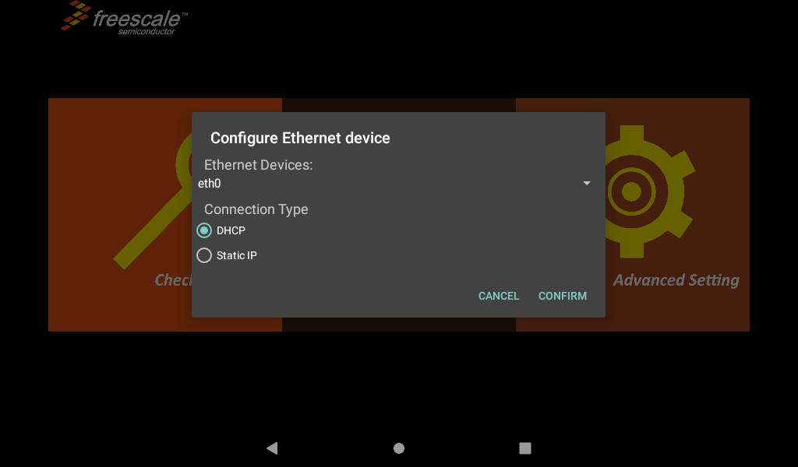
You can choose to obtain IP DHCP or static IP automatically. DHCP is recommended. If you set a static IP, make sure your network parameters are available;
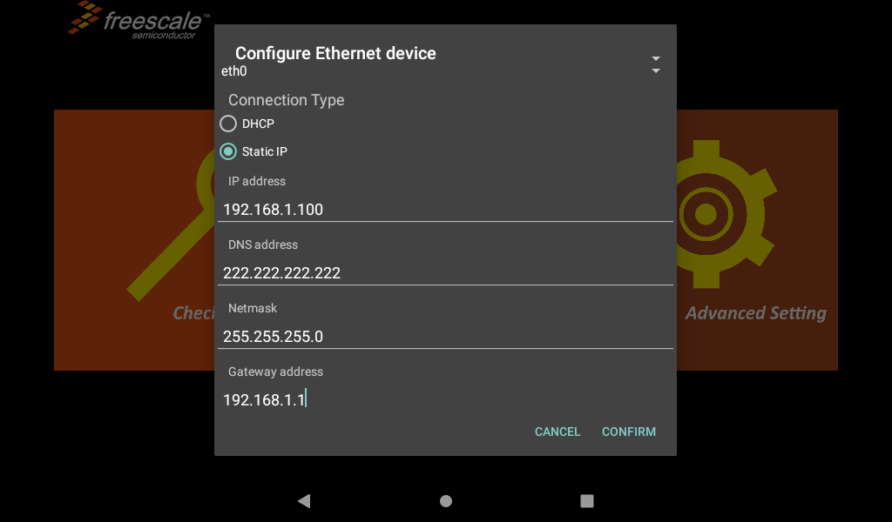
After configuration, click confirm to save the settings;
If you need to use a proxy for Internet access, you can set it up in the Advanced Settings option.
Note: When 4G, WiFi and Ethernet exist at the same time, Ethernet is preferred by default.
3.11 WiFi Test
Note: When testing WiFi, unplug the wired network.
The WiFi test uses the wifi & Bluetooth integrated module. Select the settings. The interface is as follows:

3.11.1 WiFi Test
Click “Network and Internet” to turn on the WIFI switch.

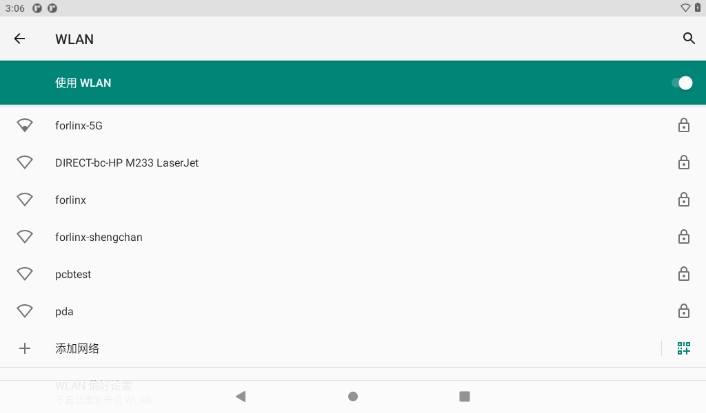
Click the hotspot you want to connect to and enter the password.
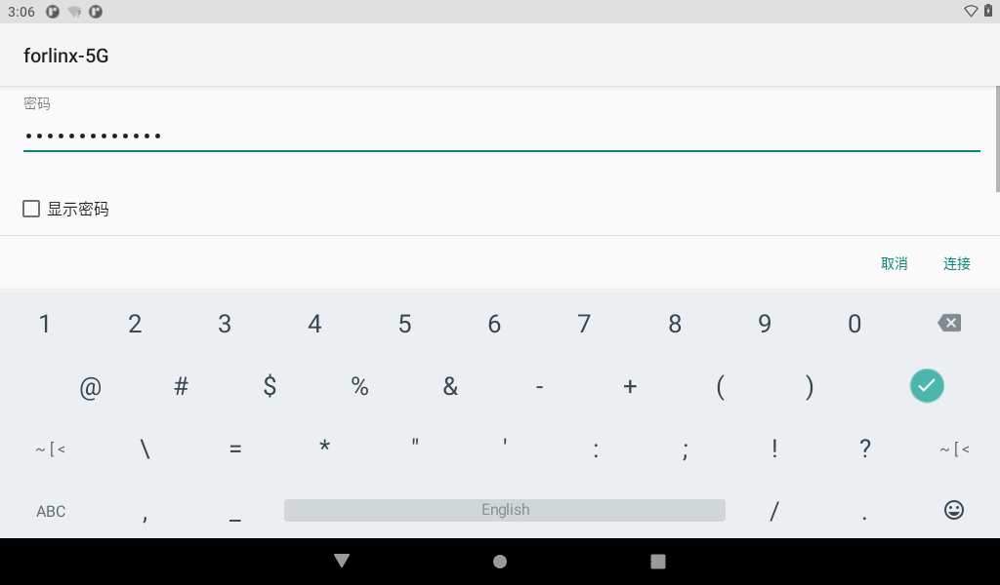

After the connection is successful, the WebView Browser Tester application on the desktop can be opened for online testing.
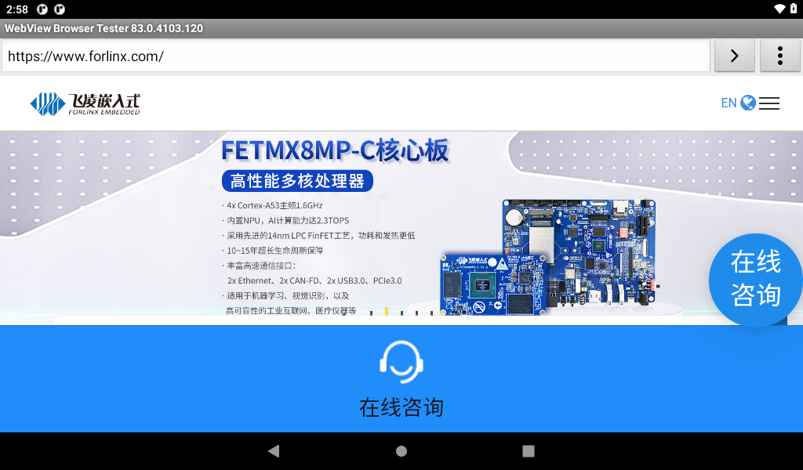
3.11.2 WiFi Hotspot Test
Click on “Network and Internet”

Click “Hotspot and Network Sharing”:
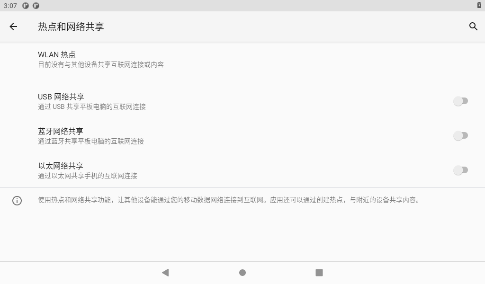
Open the hotspot after setting the hotspot name and password:


After the phone is connected to the hotspot, open the browser to test:

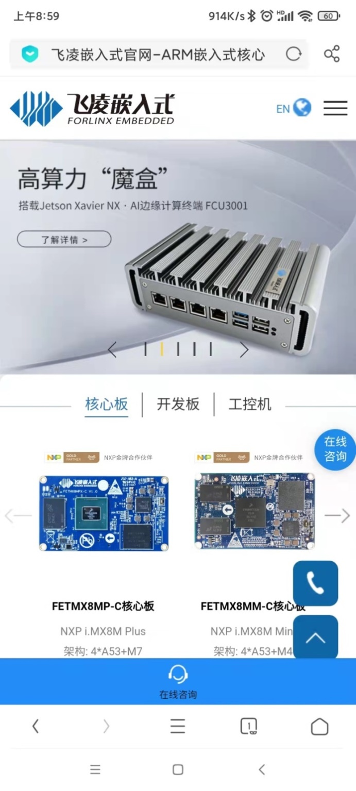
3.12 Bluetooth Test
The WiFi & Bluetooth integrated module is used for the Bluetooth function test. The test method is as follows:
Select Settings:

Click Connected Device-> Pair with the new device, and turn on the Bluetooth switch of the mobile phone.
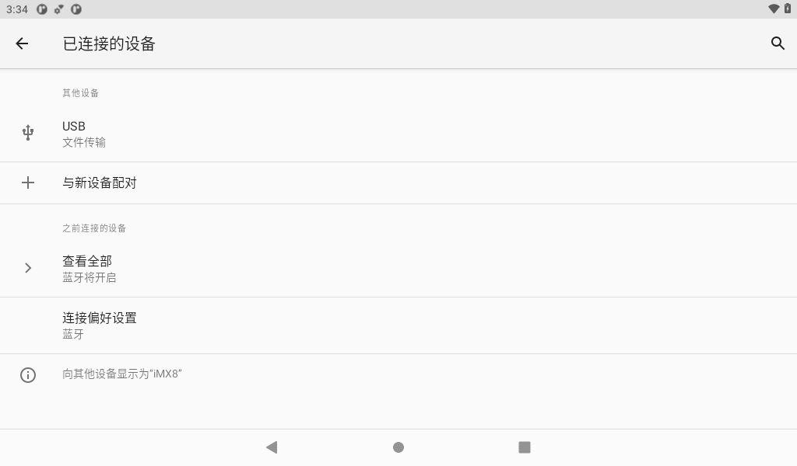

Click the mobile device in the available devices (whichever is actual) to start pairing.
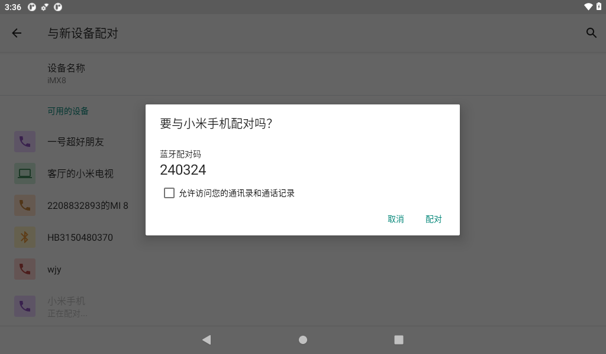
Click the “Pairing” button on both the mobile phone and the development board.

When finished, the successfully paired devices will be displayed in Connected Devices. After successful pairing, Bluetooth can be used for file transfer test.
3.13 Key Test
There are 5 buttons on the development board, including Vol +, vol-, home, on off, and reset.
Key |
Function |
|---|---|
K1 up |
Reset |
K1 down |
Wake up from sleep |
K2 up |
VOL+ |
K2 down |
VOL- |
The factory default setting of OKMX8MPQ is that the screen is always on and does not sleep.
Press the K1 for a long time to “shut down” and “restart”, and press the K1 and K2 at the same time to take a screen shot.
The other buttons have simpler functions, so please test them yourself.
3.14 TF Card and USB Storage Test
This test is for TF cards and usb storage devices. Insert the TF card device into the development board. The system will automatically detect the insertion of the TF card. For example, click on “SanDisk SD Card” to browse for files.


The usage of a USB flash drive is the same as an TF card, so it won’t be repeated here.
3.15 USB Mouse Test
Once the system is running, you can plug in a USB mouse into the USB host. You will then see the mouse cursor “ ”, within the interface, and you can navigate and operate the Android system using the mouse.
”, within the interface, and you can navigate and operate the Android system using the mouse.
3.16 USB Type C Interface Test
The OKMX8MM development board supports the USB type C function, and the USB mouse, USB keyboard, and U disk device can be connected by using the type C to host cable.
Use the Micro USB adapter to connect the development board and USB flash drive, the system will automatically detect the USB flash drive insertion.
Click Browse to access the USB device file.
3.17 Serial Port Test and 485 Test
There are four serial ports in the OKMX8MPQ-C development board, two of which are used by A core, and the remaining one is used by the M4.
1) UART1 is connected to the Bluetooth module, and the device name is/dev/ttymxc0;
2) UART2 is the debugging serial port, and the device name is/dev/ttymxc1;
3) UART3 is used as 485 interface, device name:/dev/ttymxc2.
In addition to the native serial port, we also extended four serial ports through the USB-to-serial port chip:
1）UARTA, device name ：/dev/ttyXRUSB0.
2）UARTB, device name ：/dev/ ttyXRUSB1.
3）UARTC, device name ：/dev/ ttyXRUSB2.
4）UARTD, device name ：/dev/ttyXRUSB3.

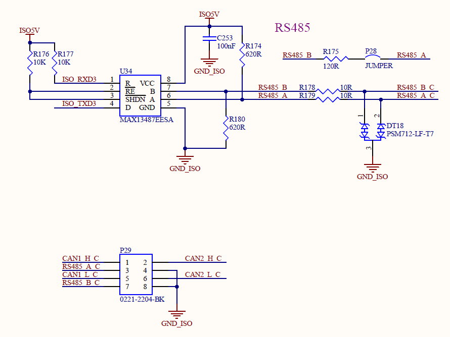
485 Test
First, connect the USB to 485 device to the PC and the development board, enter the system, select “ ”, and the test interface appears.
”, and the test interface appears.
Click the “Setup” button to set the port, baud rate data bit and other parameters respectively before the next operation;


Click “Console” button;

Open the serial port assistant on the PC and select to set the corresponding parameters. Sends a string to the board.
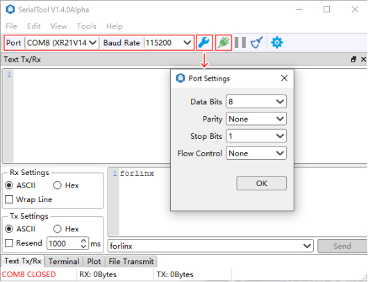
Under normal circumstances, the development board can receive the string sent by the PC.
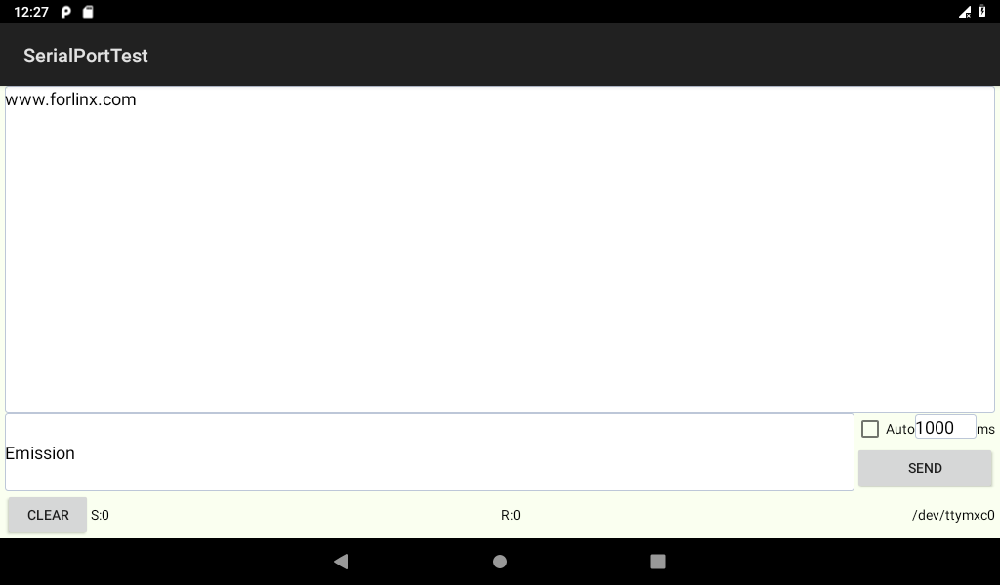
Serial Test
The loop test method can be used to test the serial port. According to the schematic diagram, the receiving and transmitting pins of USBA are short-circuited.

Click the “SETUP” button to select the device node corresponding to USBA.


Click the “Loopback” option in the previous menu to perform the loopback test.
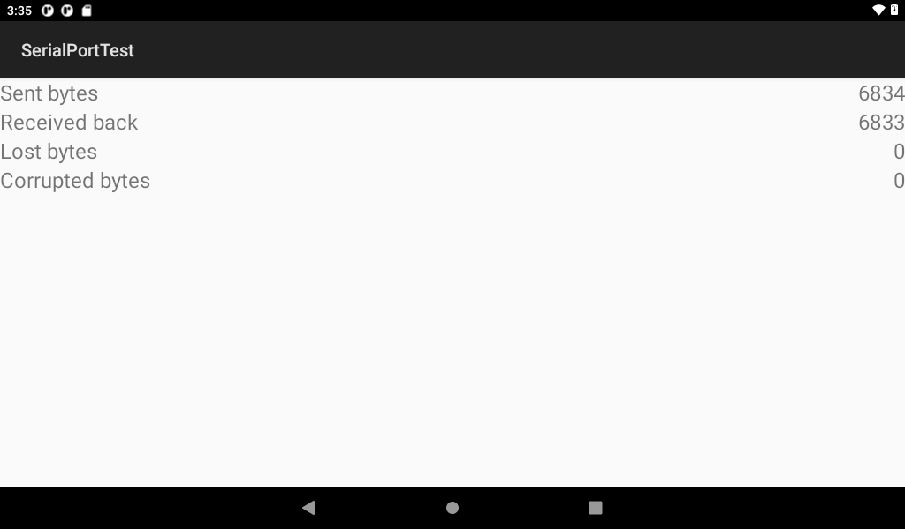
3.18 SPI Loopback Test
OKMX8MPQ exports SPI interface as spidev. Click the “forlinx _ SPI _ test” Application “on the desktop to perform the SPI loopback test.

Click the Send button. The receive fails because there is no loopback on the hardware.

According to the schematic diagram, short the MOSI and MISO pins of the two SPI respectively.
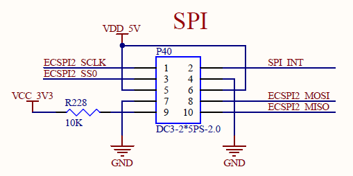
Click the Send button here.

3.19 Camera Test
The OKMX8MPQ-C SoM supports the ov5645 MIPI camera and the daA3840-30mc MIPI camera, with the ov5645 MIPI used as the front-facing camera and the daA3840-30mc MIPI used as the rear-facing camera. The ov5645 MIPI supports a maximum photo resolution of 1920x1080 and 1080P video at 30 frames per second. The daA3840 - 30mc MIPI supports 1920x1080 photo shooting and 1080P video at 60 frames per second.
Use the Android built-in program “Camera” to test, click the application “ ” to start the test program, select “Allow only when using the application” in the permission inquiry interface, select Allow when asking the camera to access the device file, and click the next page to enter the application.
” to start the test program, select “Allow only when using the application” in the permission inquiry interface, select Allow when asking the camera to access the device file, and click the next page to enter the application.


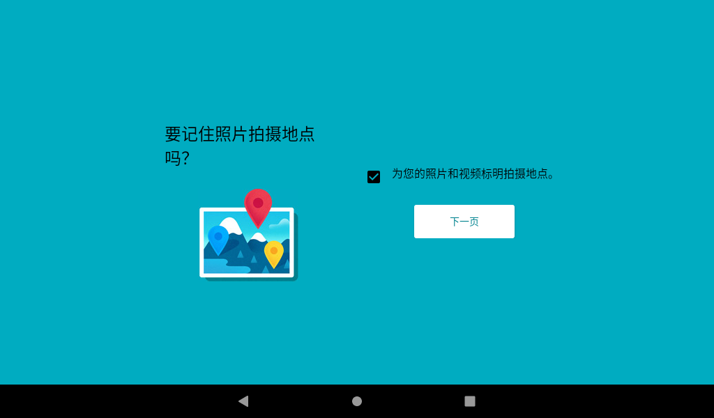

3.19.1 Taking Photo Test
In the camera application, slide to the right, and the camera and video options appear. Click Settings to enter the setting interface. Select the resolution and picture quality to set the front and rear cameras according to the requirements. After setting, select the camera function to take photos.


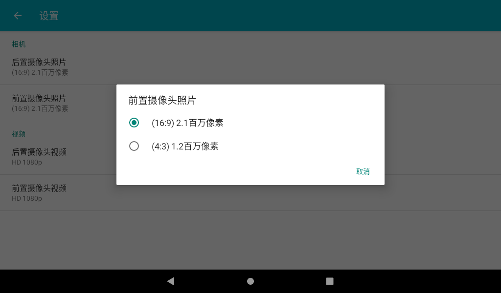
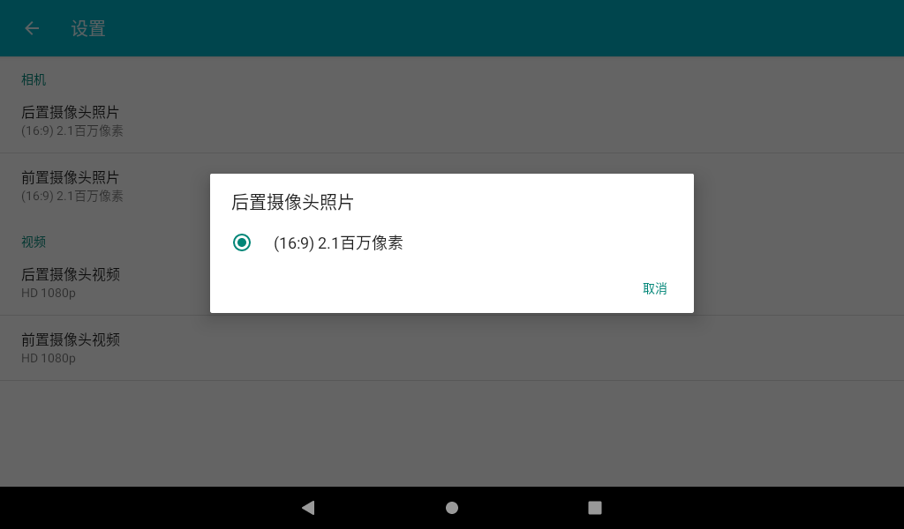
The camera interface displays the preview of the current camera. Click the photo button to take a photo.

Click the icon “ ” to pop up the photo setting interface, and click the first icon to switch the front and rear cameras.
” to pop up the photo setting interface, and click the first icon to switch the front and rear cameras.

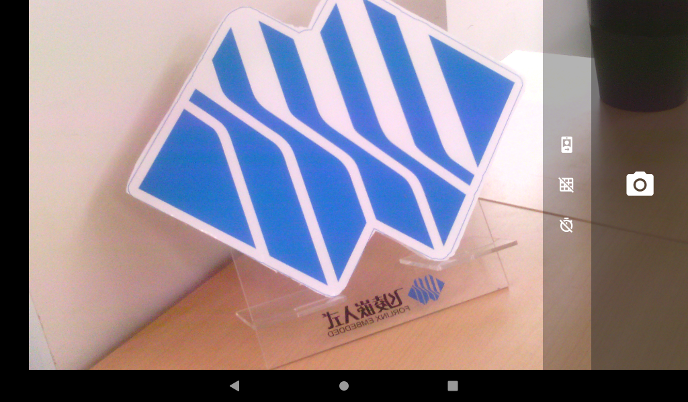
3.19.2 Audio Test
In the camera application, slide to the right, and the camera and video options appear. Click Settings to enter the setting interface. Select the resolution and picture quality to set the front and rear cameras according to the requirements. After setting, select the camera function to take photos.


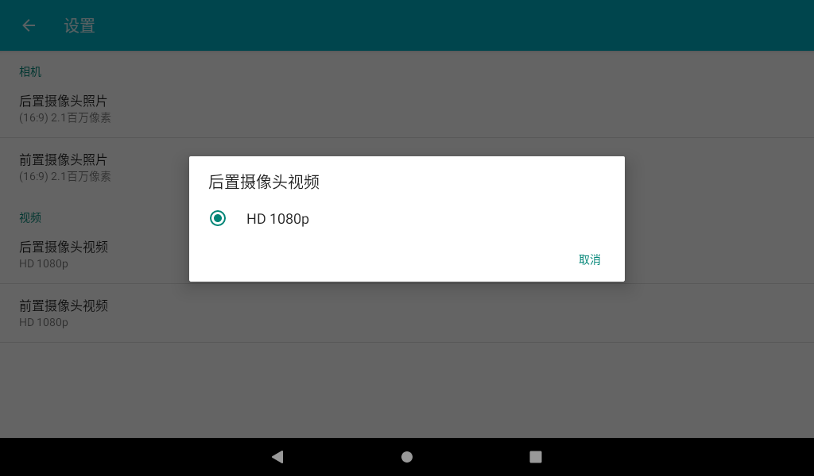
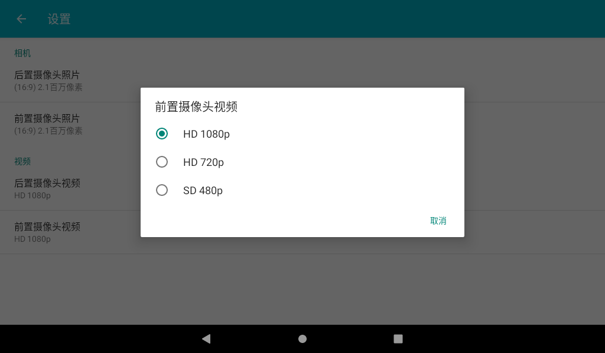
The video interface displays the preview of the current camera. Click the Record button to record, and click Stop to finish recording.

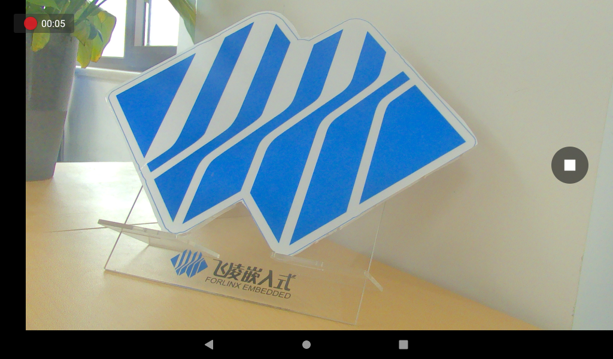
Click the icon “ ” to pop up the photo setting interface, and click the first icon to switch the front and rear cameras.
” to pop up the photo setting interface, and click the first icon to switch the front and rear cameras.
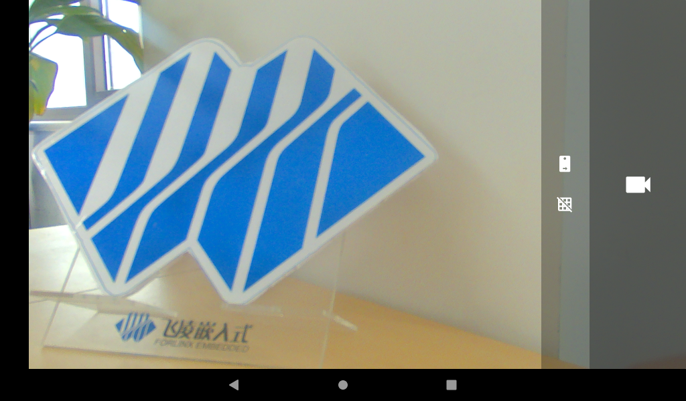
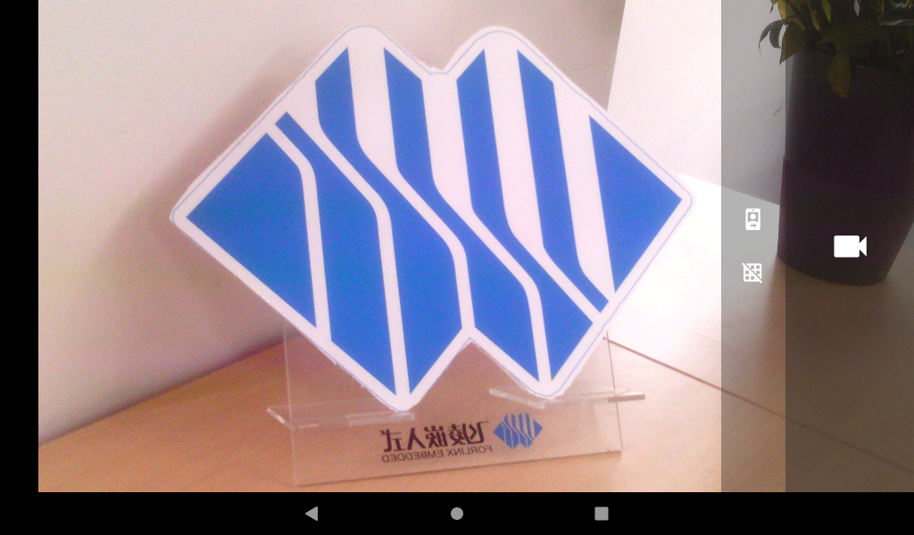
3.20 4G Test
The OKMX8MPQ-C supports EC20 4G modules.
Note: Before starting the development board, connect the 4G module, set the position of the OKMX8MPQ-C carrier board S3 to OFF, insert the SIM card, and start the development board.
After the system starts, the status bar shows that the 4G network is connected and the signal strength is displayed.
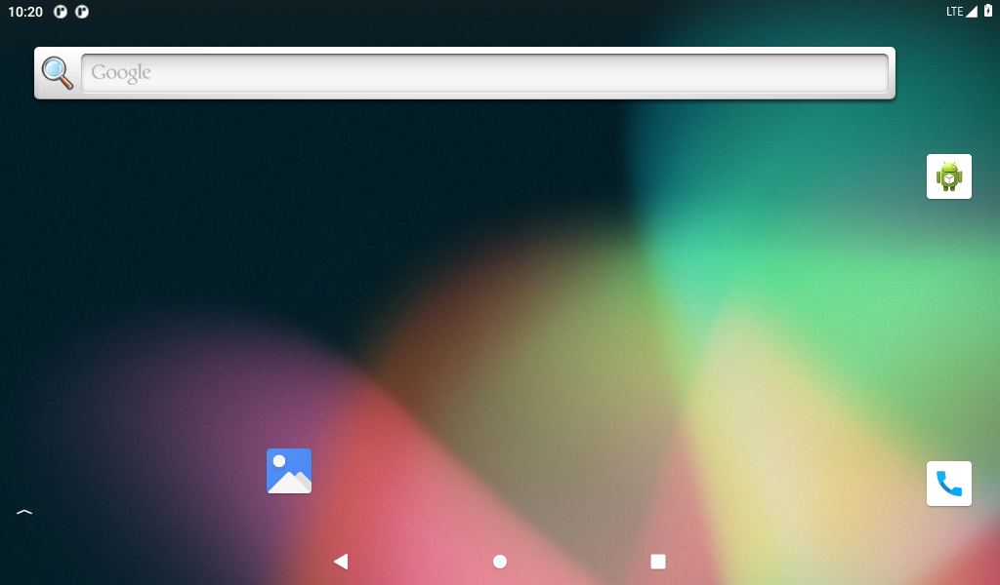
Open the browser and enter the URL to test.
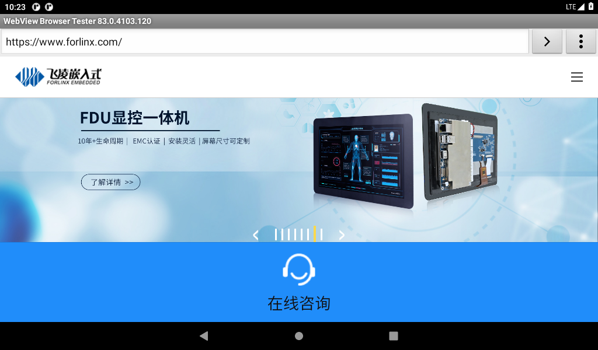
3.21 5G Test
The OKMX8MPQ-C supports the RM500U 5G module.
Note: Before starting the development board, connect the 5G module, set the position of the OKMX8MPQ-C carrier board S3 to ON, insert the SIM card, and start the development board.
After the system starts, the status bar shows that the 5G network is connected and the signal strength is displayed.

Open the browser and enter the URL to test.

3.22 CAN Test
The OKMX8MPQ-C development board supports 2 x CAN and can support operation in CAN FD mode. The test in this chapter is demonstrated by testing two development boards. Before the test, connect one of the can interfaces of one development board to the can interface of the other development board, CAN _ H to CAN _ H, and CAN _ L to CAN _ L.
3.22.1 CAN 2.0B Test
Start the test program “Can Test”, select “CAN 2.0B TEST”, click “SETTING” for configuration, choose to use can0 or can1, set the baud rate, and then return to the test interface.
Note: The CAN interface is reconfigured by detecting changes in the CAN mode. Currently, the CAN interface is configured by default to operate in CAN 2.0B mode with a baud rate of 125000. However, the CAN interface is not opened by default. When it is necessary to operate the CAN in CAN 2.0B mode at 125000 baud rate, the rate needs to be set to a different baud rate first and then changed to 125000. This issue will be fixed in the future.
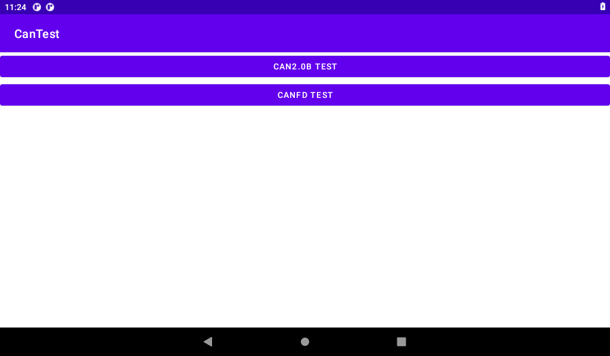

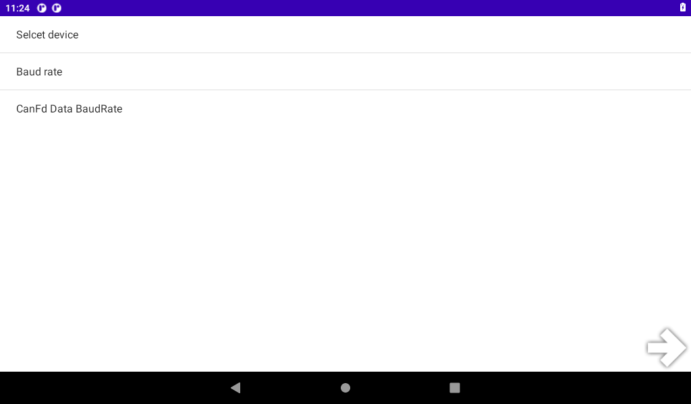
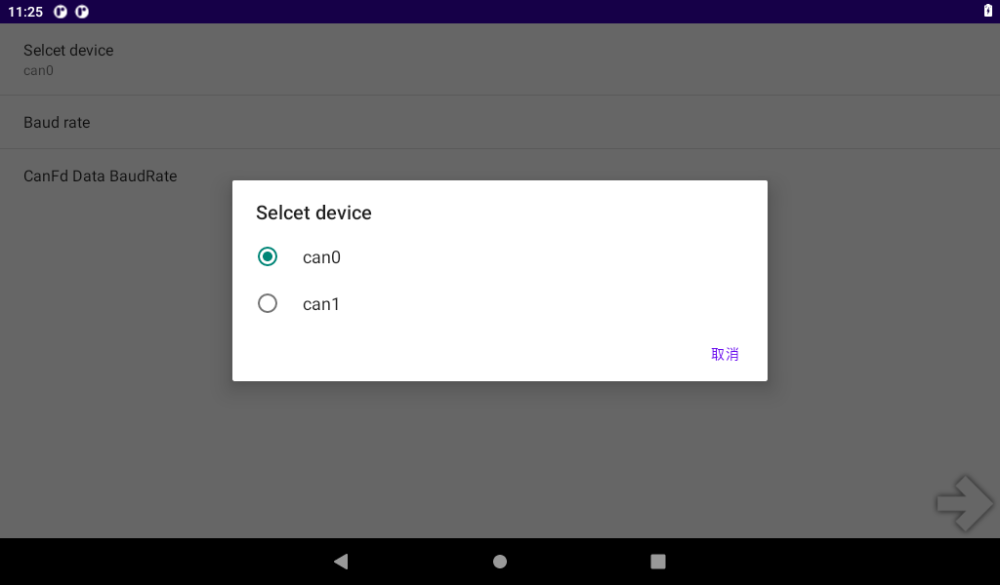

Set up the two development boards according to the above method and start the test.
Enter the CANID (32-bit) and CAN DATA (up to 64 bits) for transmission. Input is in hexadecimal format (0-F, case-insensitive) without any spaces or additional characters between each byte. After inputting the data, click “SEND” to transmit.
Test 1: Development board 1 sends, and development board 2 receives.
Development board 1 sends:

Development board 2 sends:

Test 2: Development board 2 sends and development board 1 receives.
Development board 2 sends:
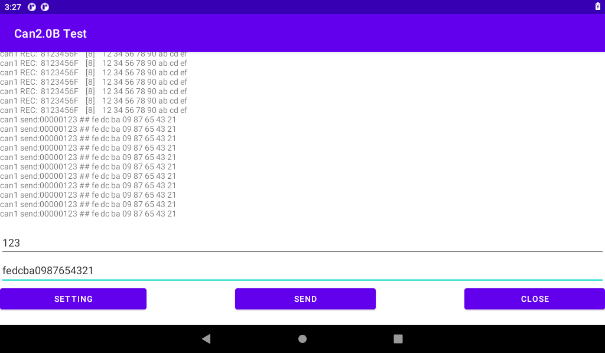
Development board 1 sends:

3.22.2 CAN FD Test
Start the “Test program” Can Test “, select the” CANFD TEST “”, click “SETTING” to set, select can0 or can1, set the baud rate and CANFD Data baud rate, and then return to the test interface.


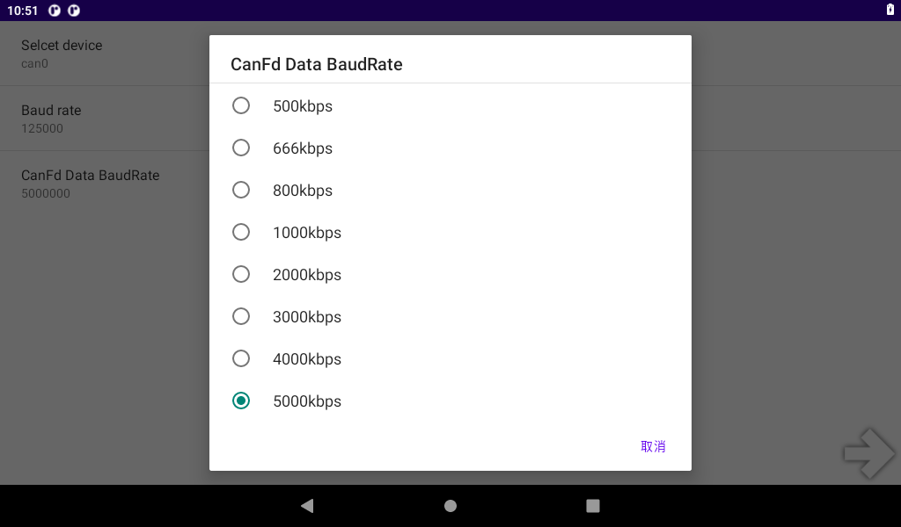
Set up the two development boards according to the above method and start the test.
Input the transmitted CANID (32 bits) and CAN DATA (512 bits at most). The input is hexadecimal (0-F is not case-sensitive). No space or other characters are added to each byte. After the input is completed, if the input is CANFD Frame Enable Send CanFdFrame Enable “, If CANFD data is sent at different baud rates, enable the “Can Fd Bit Rate Switch Flag” “, and then click” SEND “to send.
Board 1 sends, board 2 receives:
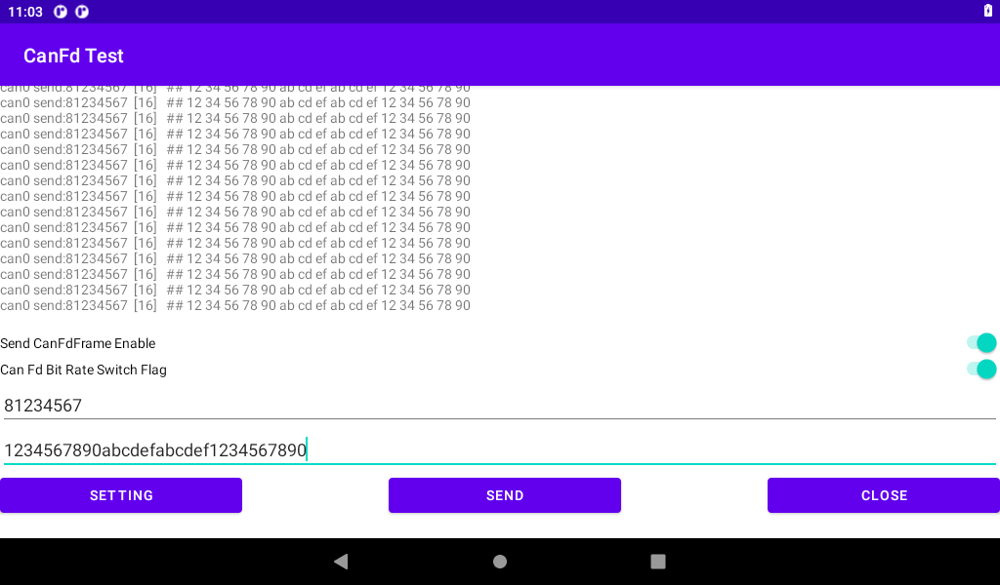
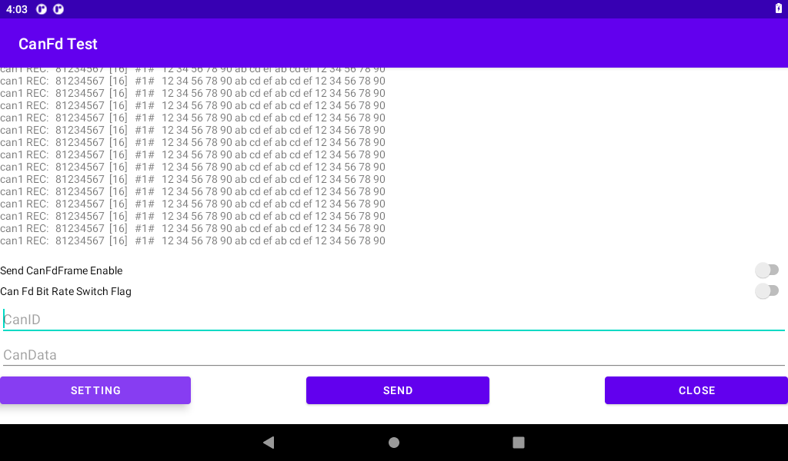
Board 2 sends, board 1 receives:

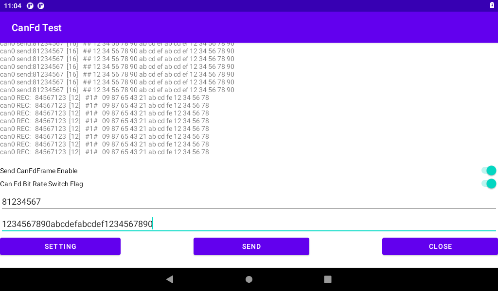
4. System Flashing
4.1 Flashing the Image with UUU
UUU is a command-line tool that can be used to flash images onto the OKMX8MM development board in Linux or Windows environments. For the Android system, NXP provides integrated scripts for both Linux (uuu_imx_android_flash.sh) and Windows (uuu_imx_android_flash.bat) platforms. Here are the instructions for using each of these two tools.
uuu_imx_android_flash parameter description:
Parameter |
Description |
|---|---|
-h |
help |
-f |
soc_name |
-a |
flash only slot _ a |
-b |
flash only slot _ b |
-c |
Default use partition-table. img |
-m |
Flash Cortex-M7 image |
-d |
Flash a specific dtbo vbmeta recovery image |
-e |
Erase the userdata partition after the write is complete. |
-l |
Lock the device after flashing is complete. |
-D |
Image path, use current path by default without specifying |
-s |
Serial port number, used when multiple devices are connected to the PC at the same times. |
The following describes the use of UUU tools under Linux and Windows respectively.
Note:
Do not use the uuu_imx_android_flash.sh generated by the android environment compiler. Please use “User Profile Tool \uuu_imx_android_flash.sh”;
Plug the OTG cable into the Linux host’s USB port If you are using a virtual machine, move the following devices to the virtual machine.
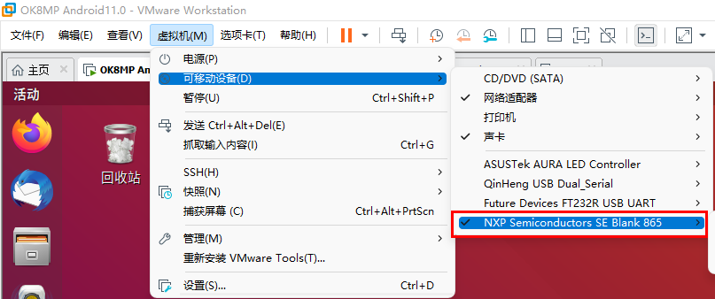
4.1.1 Use of the uuu_imx_android_flash.sh tool on Linux
Path: OKMX8MPQ-C (Android) User Profile \ Tool
Copy the uuu of the tool directory in the downloaded user profile to the/usr/bin/directory and add executable permissions. Copy uuu_imx_android_flash.sh to the /home/forlinx/imx8mp/uuu directory.
Note: Do not use the uuu_imx_android_flash.sh generated by the android environment compilation. Meanwhile, if the fastboot version is too low, the device cannot be identified. Please extract the tools such as the fastboot adb in the platform-tools _ r28.0.3- Linux. zip in the CD tool directory to the/usr/bin directory and add executable permissions.
Plug the type C cable into the USB port of the Linux host. If you are using a virtual machine, move the following devices to the virtual machine;


Copy the compiled image (. img and u-boot to the/home/forlinx/imx8mp/uuu directory;
Note:
Copy the compiled image (*.img and u-*) to the/home/forlinx/imx8mp/uuu directory. Where. img is a fully compiled generated file, because u-boot is not open source. Therefore, you need to copy the “u-boot-imx8mp.imx” and “u-boot-imx8mp-evk” uuu. Imx “under the” user information/Android/image/uuu/ “path to the/home/forlinx/imx8mp/uuu directory;
If the user has not compiled the source code and simply uses the image in the user profile to flash, you can directly copy the (*.img and u-boot *) under the path of “user profile/Android/image/uuu/” to the directory of/home/forlinx/imx8mp/uuu;
According to the schematic diagram, change the dial-up startup mode to USB, and start the development board;
Enter the following command to enter the corresponding path for programming:
forlinx@ubuntu: ~$ cd /home/forlinx/imx8mp/uuu
forlinx@ubuntu: ~/imx8mp/uuu$ sudo ./uuu_imx_android_flash.sh -f imx8mp -e
Note: Do not insert the TF card when flashing.
Once the flashing process begins, you will receive a prompt to connect the device to the host machine or virtual machine. Please actively select the option to connect it to the virtual machine.

Wait for the flashing process to complete. A successful flashing operation will be indicated as shown in the following image:

4.1.2 Use of uuu_imx_android_flash.bat Tool on Windows.
Note: The command line window must be run with administrator privileges when flashing uuu.
Step 1: Copy file;
Path: OKMX8MPQ-C (Android) User Profile \ Tool\uuu.exe
Copy uuu.exe from the downloaded material to the C:\Windows\System32 directory.
Path: OKMX8MPQ-C (Android) User Profile\Tools\platform-tools_r28.0.3-windows.zip
Extract the platform-tools_r28.0.3-windows.zip file from the user profile tools directory to C:\Windows\System32, or to C:\Windows\SysWOW64 for 64-bit windows systems.
Step 2: Connect the USB interface of the host to the Type-C interface of the development board using an OTG cable, then set the dip switch to [specific setting], remove the TF card, and power on the development board;
Step 3: Check the installation.
By clicking on the start menu, type “cmd” in the search box at the bottom of the start menu, and press enter on cmd.exe to open the DOS window. In the DOS window, type “uuu” and press enter.
C:\Users\Administrator>uuu
uuu (Universal Update Utility) for nxp imx chips -- libuuu_1.4.139-0-g1a8f760
uuu [-d -m -v -V] <bootloader|cmdlists|cmd>
bootloader download bootloader to board by usb
cmdlist run all commands in cmdlist file
If it is path, search uuu.auto in dir
If it is zip, search uuu.auto in zip
cmd Run one command, use -H see detail
example: SDPS: boot -f flash.bin
-d Daemon mode, wait for forever.
-v -V verbose mode, -V enable libusb error\warning info
-m USBPATH Only monitor these paths.
-m 1:2 -m 1:3
[…]
Register-ArgumentCompleter -CommandName uuu -ScriptBlock {param($commandName,$parameterName,$wordToComplete,$commandAst,$fakeBoundParameter); C:\WINDOWS\system32\uuu.exe -autocomplete $parameterName }
Switch to the directory where the extracted files are located.
Microsoft Windows [Copyrights 10.0.19044.1645]
(c) Microsoft Corporation. All rights reserved.
C:\Users\Administrator>cd c:\
c:\>cd \Windows\System32\platform-tools
Enter fastboot -h Confirm whether the installation is successful.
c:\Windows\System32\platform-tools>fastboot -h
usage: fastboot [OPTION...] COMMAND...
flashing:
update ZIP Flash all partitions from an update.zip package.
flashall Flash all partitions from $ANDROID_PRODUCT_OUT.
On A/B devices, flashed slot is set as active.
Secondary images may be flashed to inactive slot.
flash PARTITION [FILENAME] Flash given partition, using the image from
$ANDROID_PRODUCT_OUT if no filename is given.
[…]
options:
[…]
--version Display version.
--help, -h Show this message.
Enter adb Confirm whether the installation is successful.
c:\Windows\System32\platform-tools>adb
Android Debug Bridge version 1.0.41
Version 28.0.3-5475833
Installed as c:\Windows\System32\platform-tools\adb.exe
global options:
-a listen on all network interfaces, not just localhost
-d use USB device (error if multiple devices connected)
-e use TCP/IP device (error if multiple TCP/IP devices available)
-s SERIAL use device with given serial (overrides $ANDROID_SERIAL)
-t ID use device with given transport id
-H name of adb server host [default=localhost]
-P port of adb server [default=5037]
-L SOCKET listen on given socket for adb server [default=tcp:localhost:5037]
[…]
environment variables:
[…]
$ANDROID_LOG_TAGS tags to be used by logcat (see logcat --help)
$ADB_LOCAL_TRANSPORT_MAX_PORT max emulator scan port (default 5585, 16 emus)
Note: If prompted that api-ms-win-crt-runtime-l1-1-0.dll is missing, install patch KB2999226 on your system.
Step 4: Create the uuu folder and put the corresponding image in the folder.
Path: OKMX8MPQ-C (Android) User Profile \ Android \ Image \ uuu.
Copy the files in the above path to the uuu directory created in any disk other than the C disk, for example, D: \ uuu.
Step 5: Enter the command to burn in the Windows host.
Enter the uuu directory:
C:\WINDOWS\system32> d:
D:\> cd uuu
Flash system image:
D:\uuu> uuu_imx_android_flash.bat -f imx8mp -e
Successful burning is shown in the following figure:

When uuu burns, an error occurs as shown in the figure, you can re-plug the usb cable to ensure that the usb is not mounted to the virtual machine.

4.2 Flashing the Image with TF
4.2.1 Making and Writing TF Card
Note:
When using a TF card to burn the system, please use a genuine TF card with a capacity of 8G and above to test;
Before making card, you need to format the TF card to the FAT32 format. Insert the TF card into the PC using a USB card reader.
Path: OKMX8MPQ-C (Android) User Profile\tool\sdfuse.
Copy the sdfuse folder in the CD material to the virtual machine/home/forlinx/imx8mp/tools/sdfuse directory, and insert the TF card into the virtual machine.
Enter the flashing directory:
forlinx@ubuntu:~$ cd /home/forlinx/imx8mp/tools/sdfuse
Execute the business card printing script:
forlinx@ubuntu:~/imx8mp/tools/sdfuse$ sudo ./mksdcard8mp.sh

Select the TF card device, taking “1” as an example.

Enter “y” to confirm.

Production is complete.
Note: After business card printing according to the script at this time, the TF card will be automatically unloaded. If you want to still mount it on the development environment after business card printing is completed, you need to modify the business card printing script mksdcard8mp.sh:
forlinx@ubuntu:~/imx8mp/tools/sdfuse$ vi mksdcard8mp.sh
[…]
for i in `ls -1 $DRIVE?`; do
echo "unmounting device '$i'"
# umount $i 2>/dev/null //Comment out the command at the end of the script
done
4.2.2 Copying and Writing Image
The factory image can be copied to the FAT32 partition of the TF card in the downloaded data, and the image is in the following path
Path: OKMX8MPQ-C (Android) user profile \ Android \ image \ tfcard
Specific options to be copied are shown in the table below.
Copy the android image and the burning tool to the FAT32 partition of the burning TF card.
File |
Description |
|---|---|
config.ini |
Flash configuration files, in the tools/sdfuse directory |
ramdisk.img |
Flash configuration files, in the tools/sdfuse directory |
imx-boot.bin |
The card provisioning file is located in the tools/sdfuse directory |
dtbo-imx8mp.img |
Flash image, compile and generate |
partition-table.img |
Flash image, compile and generate |
vendor_boot.img |
Flash image, compile and generate |
u-boot-imx8mp.imx |
Flash image, compile and generate |
vbmeta-imx8mp.img |
Flash image, compile and generate |
boot.img |
Flash image, compile and generate |
logo_raw.img |
Flash image, generated using logo.img |
super_raw.img |
Flash image, generated using super.img |
kernel |
Image and OK8MP.dtb are placed in the folder, which is used to boot during the burning phase |
How to generate logo_raw.img and system_raw.img:
forlinx@ubuntu:~/imx8mp/tools/sdfuse$ simg2img logo.img logo_raw.img
forlinx@ubuntu:~/imx8mp/tools/sdfuse$ simg2img super.img super_raw.img
If simg2img is not found, use the sudo apt-get install android-tools-fsutil command to install it.
4.2.3 TF Card Flashing Test
Turn off the power of the development board, insert the TF card into the TF card holder, and set the startup dial code to the TF card startup state according to the schematic diagram
Turn on the power switch, and the development board will automatically start to enter the flashing program. Please pay attention to the flashing progress by debugging the serial port or observing the flashing change of the heartbeat lamp D1. When D1 flashes once per second, it indicates that the flashing is completed.

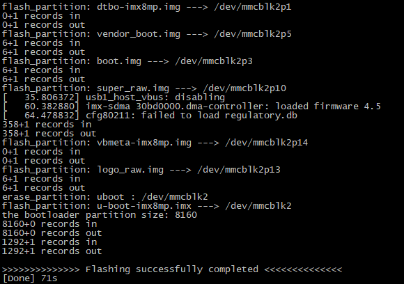